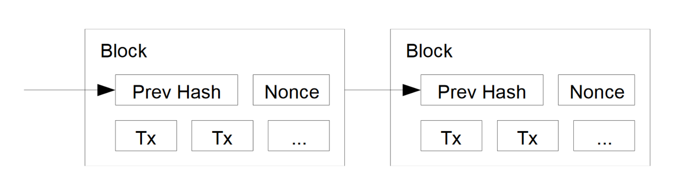
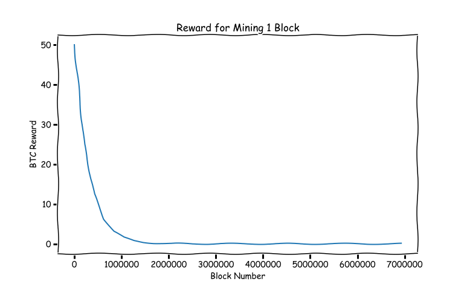
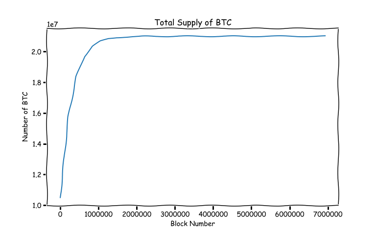

What is a Bitcoin Worth, Anyway?
Thu, 26 Oct 2017
Bitcoin, Computer Science, Cryptocurrency, Hashing, Security
Is the recent surge in Bitcoin's price a speculative bubble?
By definition, an economic bubble is a situation in which an asset is traded within a price range that far exceeds its intrinsic value. So, the question is: what
is the intrinsic value of Bitcoin? The purpose of this post is to explain some of the technical details of Bitcoin so as to gain a better idea of its value.
Introduction
Bitcoin is an electronic currency that is maintained by a peer-to-peer software application known as
Bitcoin Core. Bitcoin transactions are broadcast over the peer-to-peer network and Bitcoin Core records every transaction ever issued in a ledger that is maintained by each node running the software.
These transactions are sealed with a cryptographic hash inside blocks which are linked together in a chain known as the blockchain. Each block in the chain contains the hash of the previous block making it infeasible to tamper with transactions once they are a part of the blockchain. Figure 1, taken from the original paper, illustrates the blockchain [1].

Figure 1: The Blockchain
The blockchain maintains the integrity of the transaction record and prevents double-spending and the repudiation of transactions.
Historical Trends
The price of Bitcoin has historically been very erratic. Its frequent spikes and crashes have resulted in some interesting trends. Figure 2 shows the relationship of the price of Bitcoin in USD (taken from
blockchain.info) to the popularity of two search trends (taking from Google Trends):
"Bitcoin Bubble" and
"Bitcoin Scam". The correlations for each plot are 0.7704 and 0.9445, respectively.
Figure 2: Bitcoin Search Trends
The above trends hint that there is a lot of uncertainty and speculation about the present and future value of Bitcoin.
The Cost of Mining Bitcoin
According to the pseudonymous creator of Bitcoin, Satoshi Nakamoto, the intrinsic value of Bitcoin stems from the resources that are expended to mine it: CPU time and electricity [1].
Bitcoin mining is the process of cryptographically sealing blocks and adding them to the blockchain in a way that prevents tampering. Mining is accomplished by searching for
nonces (numbers) that cause the
SHA256 hash of the current block to have a certain number of leading 0s. The number of leading zeros as of Block #491713 is 18 and the hexidecimal representation of the hash digest is
00000000000000000048fddd20e468a0c9fab27c81ccade0cfd4c91e857c74e3.
Now, all SHA256 digests have 64 hexidecimal digits. Further, the nature of the SHA256 function makes it so that the best way (presently known) to find a nonce which produces the required number of leading 0s is by trial and error. Thus, the probability of finding a number to create a valid block decreases exponentially with the number of 0s required.
If it is assumed that the appearance of digits in the digest is random, then the probability of finding an appropriate nonce is presently
\(\frac{16^{64-18}}{16^{64}} = 16^{-18} \approx 2.12e-22\).
This means that the expected number of nonces that will need to be tried before an appropriate hash is found is
\(\frac{1}{16^{-18}}=16^{18} \approx 4.72e+21\).
This difficulty is what prevents malicious users from tampering with the transaction record. If a block is modified, a new nonce will need to be found for that block and for all subsequent blocks in the chain!
The present hash rate of the Bitcoin network is 9,935,312.21 tera (\(10^{12}\)) hashes per second (TH/s). The hash rate is the number of these nonces that are being tried every second across the network. Given this hash rate, a nonce can be expected to be found every
\(\frac{16^{18}}{9,935,312.21 * 10^{12}} \approx 475.31\)
seconds or just under 8 minutes. The Bitcoin software adjusts the difficulty automatically so that blocks are produced roughly every 10 minutes.
Mining is currently performed on application specific integrated circuits (ASIC) that are specifically designed to search for nonces quickly and efficiently. Current ASIC miners are capable of 14 TH/s at an efficiency of ~0.098W per GH/s. The expected amount of time for a single miner to find a good nonce at this difficulty is
\(\frac{16^{18}}{60 * 60 * 14*10^{12}} \approx 93697.75\) hours.
Thus, assuming a power supply with 90% efficiency, running a top of the line miner until a nonce is found takes roughly
\(14000 * 0.098 * \frac{1}{0.9} \frac{16^{18}}{60 * 60 * 14*10^{12}} \frac{1}{10^{3}} \approx 142837.01\) kWh.
The average cost of electricity in the US is 12 cents per kilowatt-hour. Thus, the cost of mining 1 block is roughly
\(142837.01 * 0.12 \approx \$17,140.44\).
Using the above hash rate and power consumption numbers, the entire Bitcoin network currently consumes roughly
\(9,935,312.21*0.098 \approx 973,660.60\) kW
of electricity. Some, such as
Vitalik Buterin the creator of
Ethereum, have raised concerns about the environmental impact of Bitcoin mining.
As the difficulty in mining increases, the cost of electricity can outweigh the reward for mining. Due to this, Bitcoin is primarily mined in locations with abundant and cheap electricity (next to hydro-electric dams, for example).
Presently, 12.5 BTC is mined for every new block that is created. Thus, the current reward in USD for mining 1 block is roughly
\(12.5 * 5547.95 \approx \$69,349.38\),
and the current electricity cost of mining a single Bitcoin is roughly
\(\frac{17,140.44}{12.5} \approx \$1371.24\).
According to the estimated cost of electricity, Bitcoin is presently being traded at around
\(\frac{69,349.38}{17140.44} \approx 4.05\)
times its alleged intrinsic value, which may indicate the presence of a bubble.
As an aside, the reward for mining a block began at 50BTC. The reward is set within the Bitcoin Core software to be cut in half every 210,000 blocks. Figure 3 below shows the reward that is given for a specific block number.

Figure 3: Bitcoin Mining Reward
Now, the smallest fraction of a Bitcoin is 1 satoshi or \(1e-8\)BTC. The reward for mining one block will fall below one satoshi, and thus be 0, after being halved 33 times. This means that the maximum amount of Bitcoins that can be mined is
\(210,000\sum_{i=0}^{32}{\lfloor \frac{50*10^{8}}{2^{i}} \rfloor}/10^{8} = 20,999,999.9769\) BTC.
Given the present value of 1 BTC this amounts to
\(5547.95 * 20999999.9769 \approx \$116,506,949,871.84\).
Figure 4 shows the total supply of BTC after a given number of blocks have been mined.

Figure 4: Bitcoin Supply
Conclusion
If the intrinsic value of Bitcoin is indeed the cost of the electricity required to mine it, as Satoshi claimed, then it appears that Bitcoin may be overvalued at present. The above calculations do not factor in the value of CPU time, which is more challenging to estimate, but may further increase the intrinsic value.
Regardless, the idea of a currency backed by CPU time and electricity is a relatively new concept and it remains to see how Satoshi's claim holds up to time.
References
[1] Nakamoto, Satoshi. "Bitcoin: A peer-to-peer electronic cash system." (2008): 28.
{kind=link}
{kind=link}